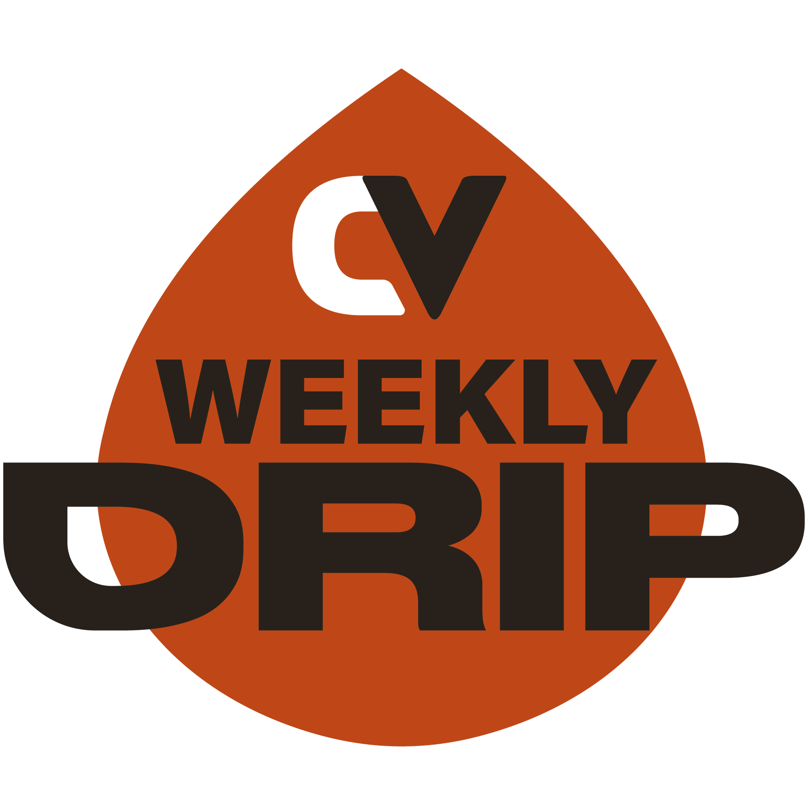

Find better tools.Create better work.
2,267 creative resources, hand-picked across 191 categories. Software, assets, marketplaces, grants, learning and AI tools — no listicles, no spam.
Tools you'll recognise, and 2,267 you might not.

The Weekly Drip
Fresh tutorials, tools and workflows gaining momentum across AI, design, 3D, music, code, games, film and photography. Refreshed every Sunday.
Browse by category
Jump straight into the lane that matches the work you're doing.
Starter kits
Focused sets for a specific job, so you don't have to browse everything at once.
The library
Every resource, filterable by category, price and platform. Results update as you type.
Nothing matches those filters.
Try a different keyword, or widen the category, price or platform.
The resource library didn't load. Check your connection and reload the page, or browse the category pages.
Take the Vault offline
The whole library as one linked PDF — for printing, for studios with patchy wifi, or for browsing away from a screen full of tabs.
- 9,289 linked resources
- 116 subcategories
- 70 pages · 6.9 MB
Guides
Focused, hand-written routes into the library for the searches creatives actually make.
Know a resource that belongs here?
Suggest a tool, course, marketplace, reference site, grant or creative platform. Every suggestion is reviewed by hand before it's added.